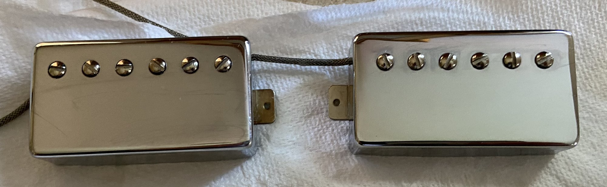

At Greylock, that decision is made with the player. Each set is wound for a particular kind of playing, and the right one is the one that fits your hands, your amp and your music.
It’s the same conviction behind everything else at Greylock: a decision this personal shouldn’t be made for you by default.
Saddleback and Goshawk both use either a two or three-pickup format, wired through simple and flexible switching so that every combination — full pickups and coil-split positions alike — is available. What changes between sets is wire gauge, magnet grade, and how tightly each coil is wound. With small changes the sets sound like different guitars.
Balanced Power
Balanced Power pairs two mini-humbuckers with a blade-format middle pickup, using that format contrast on purpose — the blade pickup’s brighter, single-coil-adjacent voice sits between two warmer mini-humbucker positions. The bridge carries the most open scatter wind of any bridge pickup Greylock builds, which is the main reason this set sounds as airy as it does; the neck is wound looser still, for maximum transparency.
Clean, it’s piano-like: individual notes speak and decay clearly, chords ring with definition instead of blur. Driven, it stays articulate later than most sets — pick attack keeps translating even as gain increases, and backing off the attack cleans the tone up on its own.
Balanced Power is built for the player who lives on a clean or lightly broken-up amp and wants the guitar itself to carry tonal variety — country, Americana, and clean-tone blues players, and anyone whose pick attack is part of their expression. It’s not the set for a player chasing amp saturation or heavy compression; the same openness that makes it articulate reads as thin at high gain.
Smoke & Oak
Smoke & Oak keeps the same wire gauge as Balanced Power but changes the magnet grades and tightens the winding, trading the blade-pickup contrast voice for a coherent all-mini-humbucker format. The bridge runs a stronger magnet and the tightest wind in the set, for more midrange grip and earlier breakup; the neck stays open and warm, close to Balanced Power’s specification, so it still cleans up and sings.
Clean, it’s fuller and rounder than Balanced Power — notes bloom slightly instead of snapping into place. Driven is where it lives: the bridge breaks up early and sustains, chords carry weight without turning muddy, and the neck produces a smooth, singing overdrive suited to jazz-inflected blues leads.
Smoke & Oak is built for the player who wants the guitar to participate in shaping the tone rather than staying neutral — blues rock, classic rock, soul, and jazz-blues players working with some amp grit. It’s not built for extreme high-gain playing; an all-mini-humbucker set stays more open and articulate than a full-size humbucker ever will.
Glass & Chrome
Glass & Chrome pairs two blade-style pickups — bridge and middle — with a mini-humbucker at the neck, wound light on purpose. The bridge blade pickup is bright and taut; the middle brings a touch more sustain and depth; the neck mini-humbucker is a different animal from the other two, warmer and softer, with a singing quality that carries into overdrive. Set together, it reads closer to single-coil territory than mini-humbucker — spank and brightness rather than push and weight.
It’s built to sit on top of a mix rather than push into it: bright, glassy, articulate, and punchy, without needing compression or heavy overdrive to get there. An on-board boost is available for players who want that same character with more signal behind it — enough to drive an amp’s front end harder without losing what makes the set sound like itself. Push it further and it will overdrive, but that’s not its typical job.
Glass & Chrome is built for the player chasing a bright, articulate, single-coil-adjacent voice who still wants humbucker quiet — funk, power-pop, jangle and indie, and session work where clarity has to cut through a dense mix without extra gain. It’s not the set for a player who lives in heavy compression or high-gain overdrive; that territory belongs to Smoke & Oak.
The Vintage Humbucker Set
Where the mini-humbucker sets are built for multi-position variety, this set is built for two-pickup simplicity: a warm, open, vintage-voiced humbucker at neck and bridge, wound with a historic single-block scatter-wind method rather than a scripted, block-by-block pattern. The result is the natural looseness and bloom that made vintage-style humbuckers famous, without needing to explain it away as unrepeatable magic.

The bridge favors rock rhythm and blues leads — round and present with smooth, natural sustain. The neck is the more touch-sensitive of the two, cleaning up beautifully on a volume roll-off and sitting comfortably in clean jazz and blues territory. Magnet grade is the main variable: Greylock’s standard A2 gives the classic warm, woody vintage humbucker character; hotter grades trade some of that bloom for tighter bass and more presence.
This vintage humbucker set comes standard on Bascom and is available on Saddleback or Goshawk for players who want that vintage warmth and dynamic touch response over the mini-humbucker format’s brightness.
A guitar honed to disappear in your hands.